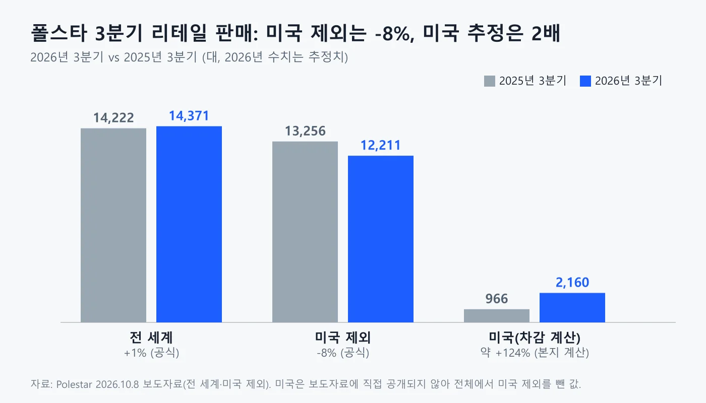
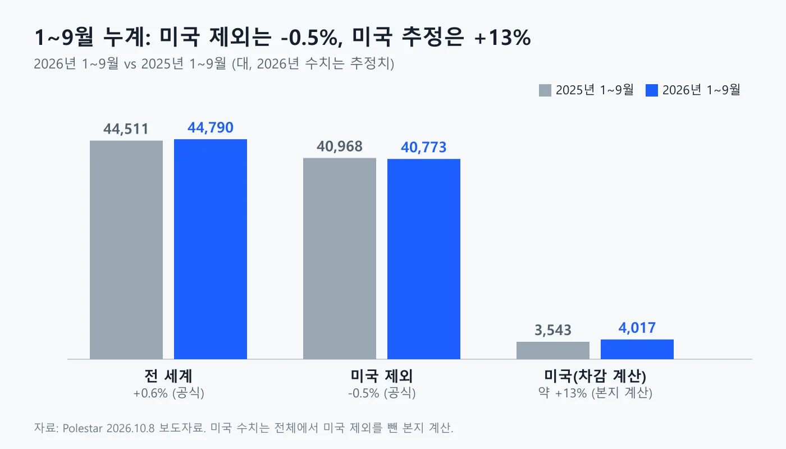
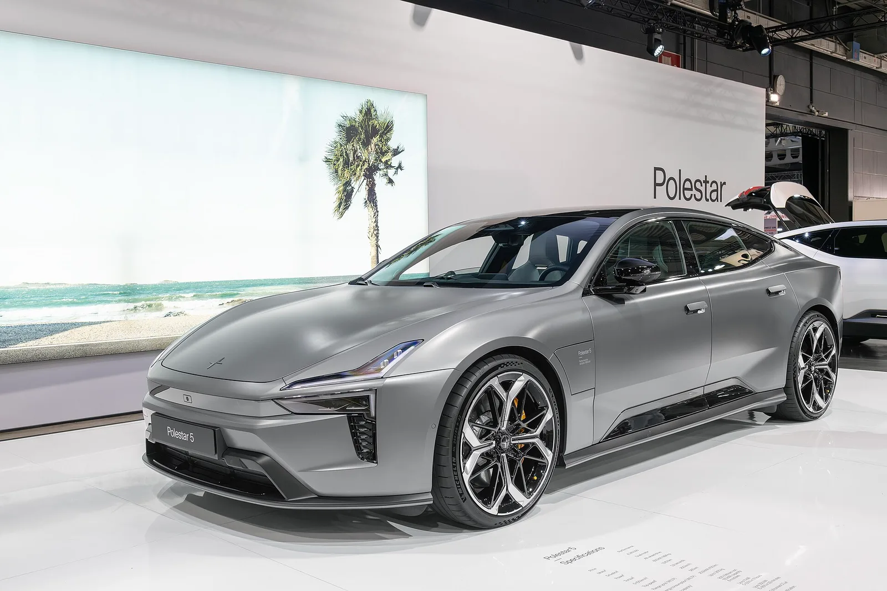
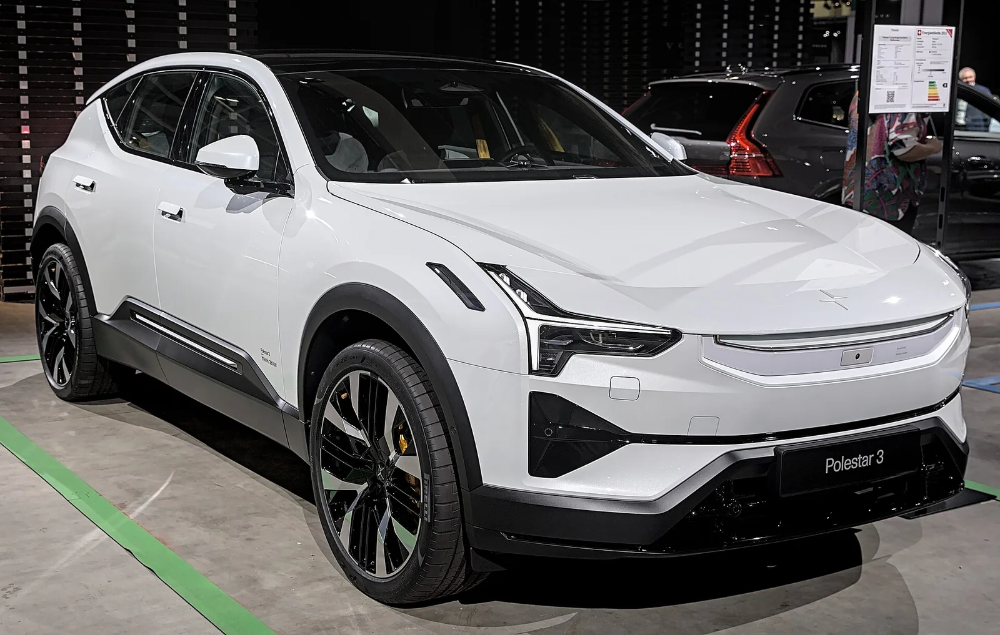
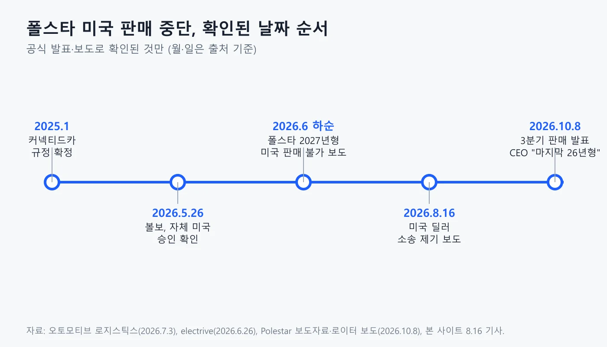

▲ 폴스타 4 — 미국에서는 2027년형부터 신차 판매가 막힌다
"지금 파는 건 마지막 2026년형" — 폴스타 CEO 미하엘 로셸러(Michael Lohscheller)가 2026년 10월 8일 로이터에 한 말이다. 같은 날 폴스타가 낸 3분기 판매 보도자료에서 미국을 뺀 판매는 12,211대로 전년 동기 대비 8% 줄었고, 전 세계 합계는 14,371대로 1% 늘었다. 두 숫자의 차이가 곧 미국 판매다. 보도자료에는 미국 수치가 없어 전체에서 미국 제외를 뺀 본지 계산으로는 3분기 약 2,160대로, 전년 같은 분기 966대의 2배를 넘는다. 이 글은 폴스타 공식 보도자료와 로이터 인터뷰 보도를 기준으로 '판매 중단'이 정확히 무엇을 뜻하는지, 3분기 숫자를 어디까지 믿어도 되는지, 한국에서 확인된 것과 확인하지 못한 것을 구분해 정리한다. 6월 이후의 경과와 딜러 소송은 폴스타 미국 철수 딜러 소송 기사에서 먼저 다뤘다.
1. '판매 중단'은 정확히 무엇이 확인됐나
확인된 것은 '2027년형부터 미국 신차 판매 불가'이고, '미국 완전 철수'라는 폴스타의 선언은 찾지 못했다. 오토모티브 로지스틱스(2026년 7월 3일)에 따르면 미국 상무부 산업안보국(BIS)이 폴스타에 커넥티드카 규정(Connected Vehicles Rule)상의 승인을 내주지 않았고, 폴스타는 2027년형부터 미국에서 신차를 팔 수 없다. 기존 재고 판매와 기존 고객 지원은 가능하다. 같은 매체는 폴스타의 미국 사업 장기 전망은 불분명하다고 적었다. electrive(6월 26일)도 같은 결정을 "2027년형 이후 신규 모델 변형에 적용된다"고 전했다.
| 항목 | 확인된 내용 | 출처 |
|---|---|---|
| 시작 시점 | 2027년형부터 신차 판매 불가 | 오토모티브 로지스틱스, electrive |
| 기존 재고 | 2026년형 이전 차량은 계속 판매 가능, 거의 소진 단계 | electrive, 로이터(로셸러 CEO) |
| 사후 서비스 | 미국 서비스 네트워크·중고차 사업 유지 | 로이터 보도 |
| 이의 제기·소송 | 폴스타가 재검토 요청이나 소송 없이 결정을 받아들이기로 했다는 월스트리트저널 보도를 뉴시스(7월 21일)가 전했다. 폴스타 공식 문구는 확인하지 못했다 | 뉴시스(WSJ 인용) |
| 완전 철수 선언 | 폴스타 공식 문구로는 확인하지 못했다 | - |
▲ 폴스타 4. 미국 판매 제한은 2027년형부터 적용되는 것으로 보도됐다 ⓒ JustAnotherCarDesigner, Wikimedia Commons (CC BY-SA 4.0)
지피코리아가 10월 9일 보도한 "2027년형부터 신차 판매 중단"이라는 표현은 이 맥락에서 읽어야 한다. 이 기사는 폴스타가 지난 6월 BIS 승인을 받지 못했다는 점, 같은 지리 계열 볼보는 별도 승인으로 판매를 이어간다는 점을 전한다. 새로운 결정이 10월에 나온 것이 아니라, 6월 결정 이후 재고 소진 상황이 10월에 확인된 것이다. 지피코리아 원문은 지피코리아 기사 바로가기 에서 볼 수 있다.
2. 규정은 무엇이고, 왜 폴스타만 막혔나
커넥티드카 규정은 중국·러시아와 연결된 차량용 통신·소프트웨어 기술을 제한하는 미국 규정이다. 오토모티브 로지스틱스는 이 규정이 2025년 1월 확정됐고, 중국이나 러시아가 소유·통제·지시하는 업체가 만든 차량을 대상으로 한다고 설명했다. 폴스타는 중국 지리홀딩그룹이 최대주주이고 볼보자동차도 지분을 갖고 있다.
의문은 같은 지리 계열인 볼보다. 볼보는 2026년 5월 26일 자체 승인을 받았다고 밝히고 미국 성장 계획을 이어가겠다고 했다. electrive는 "회사도 미국 당국도 서로 다른 결정의 이유를 설명하지 않았다"고 적었다. 폴스타 3가 볼보 찰스턴 공장(미국 사우스캐롤라이나)에서 만들어지는데도 판매가 막혔다는 점이 이 결정을 더 이해하기 어렵게 만든다. 뉴시스가 인용한 월스트리트저널 보도는 생산지와 관계없이 폴스타의 2027년형 이후 신차가 모두 대상이라고 전했다. 즉 미국 생산이라서 규정을 피할 수 있다는 가정은 이번 사례에서 성립하지 않았다.
ℹ️ 규정의 이유는 공개되지 않았다
BIS가 폴스타와 볼보를 다르게 판단한 근거는 이 글이 확인한 어떤 자료에도 없다. 딜러 측은 "규제는 핑계"라고 주장하지만 이는 소송에서의 주장이며 확인된 사실이 아니다. 자세한 내용은 딜러 소송 기사 참고.
3. 3분기 숫자: 공식 값과 계산 값은 다르다
폴스타가 직접 공개한 숫자는 두 개다. 전 세계 합계와 미국 제외 합계. 8일 보도자료는 3분기 14,371대(전년 14,222대, +1%)와 1~9월 44,790대(전년 44,511대, +0.6%)를 제시했다. 미국 제외는 3분기 12,211대(전년 13,256대, -8%), 1~9월 40,773대(전년 40,968대, -0.5%)다. 보도자료는 "미국 당국의 커넥티드카 규정 결정에 따라" 미국 제외 수치를 따로 제시한다고 설명했고, 2026년 수치는 추정이며 수정될 수 있다고 밝혔다. 보도자료는 폴스타 보도자료(SEC 제출본) 바로가기 에서 확인할 수 있다.
| 구분 | 2026 3분기 | 2025 3분기 | 증감 | 성격 |
|---|---|---|---|---|
| 전 세계 | 14,371 | 14,222 | +1% | 폴스타 공식 |
| 미국 제외 | 12,211 | 13,256 | -8% | 폴스타 공식 |
| 미국 | 2,160 | 966 | 약 +124% | 본지 계산(전체-미국 제외) |

▲ 폴스타 3분기 리테일 판매 비교. 미국 막대는 본지가 계산한 값이다 ⓒ 카프리즘 제작(Polestar 보도자료 수치)
미국 수치는 두 값을 빼서 구했다. 14,371 - 12,211 = 2,160, 14,222 - 13,256 = 966이다. 로이터 보도에도 미국 약 2,160대, 전년 966대로 같은 숫자가 나온다. 다만 폴스타가 직접 공개한 것이 아니므로 반올림·집계 시점에 따른 오차 가능성을 배제할 수 없다. 이 숫자로 말할 수 있는 것은 "전 세계 1% 증가는 미국이 만들었고, 미국 밖은 줄었다"는 정도다. 모델별 미국 판매는 폴스타가 공개하지 않았다.
4. 1~9월 누계와 재고 할인, 어디까지 확인됐나
같은 방식으로 계산한 1~9월 미국 판매는 약 4,017대(44,790 - 40,773)로, 전년 3,543대(44,511 - 40,968) 대비 약 13% 늘었다. 3분기 한 분기만 2,160대이므로 1~9월 미국 판매의 절반이 넘는 약 54%가 3분기에 몰렸다(본지 계산). 상반기 두 분기 합계는 약 1,857대(4,017 - 2,160)로 계산된다.

▲ 폴스타 1~9월 누계 판매. 미국 막대는 본지 계산 ⓒ 카프리즘 제작(Polestar 보도자료 수치)
왜 3분기에 몰렸는가에 대해 인사이드EV와 글로벌이코노믹은 판매 금지를 앞둔 재고 할인 때문이라고 분석했다. 오토블로그(7월 3일)는 폴스타 4 잔여 재고에 현금 기준 최대 2만 5,000달러 할인이 붙어 5만 6,000달러급 후륜구동 사양이 약 3만 1,400달러가 됐다고 전했다. 뉴시스(7월 21일)가 인용한 월스트리트저널 보도에도 잔여 재고를 최대 2만 5,000달러까지 할인한다는 내용이 있다. 이 할인액은 7월 보도에서 나온 것이며 10월 현재 남은 재고의 조건은 확인하지 못했다. 할인이 판매 증가의 원인이라는 해석도 폴스타가 인정한 것이 아니다.
✅ 숫자를 읽을 때 확인할 점
· "미국 판매 2배"는 약 966대 → 약 2,160대의 증가라 절대 규모가 작다
· 미국 수치는 폴스타 발표가 아니라 두 공식 숫자의 차이다
· 2026년 수치는 추정이며 수정될 수 있다고 폴스타가 밝혔다
· 할인과 판매 증가의 인과관계는 매체 분석일 뿐 확정이 아니다
5. 미국을 잃은 폴스타는 어디로 가나
폴스타가 내놓은 방향은 유럽 집중이다. 오토모티브 로지스틱스에 따르면 로셸러 CEO는 "유럽이 가장 큰 성장 엔진"이라며 폴스타 7을 유럽에서 생산할 계획을 언급했다. 폴스타 7은 볼보 슬로바키아 코시체 공장에서 2028년부터 만들 예정이다. 같은 매체는 폴스타 1분기 판매의 약 80%가 유럽, 6%가 미국이었다고 전했다. 폴스타 보도자료는 현재 5개 모델(폴스타 2·3·4 쿠페·4 SUV·5)을 두고 있고, 폴스타 2 후속은 2027년, 폴스타 7은 2028년에 나온다고 밝혔다.

▲ 폴스타 5. 3분기에 고객 인도가 시작됐다고 폴스타가 밝힌 모델이다 ⓒ Alexandre Prevot, Wikimedia Commons (CC BY-SA 4.0)
로이터 보도에 따르면 로셸러 CEO는 유럽 판매가 3분기에 약했지만 신모델이 나오면 나아질 것으로 본다고 말했다. 폴스타 5는 영국에서 수요가 강하고 독일·스칸디나비아에서도 관심이 있다고 했다. 폴스타 4 SUV는 유럽 항구에 도착해 판매점으로 향하는 중이다. 9월에는 연간 판매 성장 목표를 낮췄고 3분기 실적 발표는 11월 5일 예정이라고 로이터는 전했다. 판매 중단이 폴스타 전체에 미칠 영향은 이 실적 발표에서 더 구체적으로 확인될 것이다.
▲ 폴스타 5 후면. 미국 판매가 막힌 폴스타는 이 같은 신차를 유럽 등 다른 시장에서 팔아야 한다 ⓒ Matti Blume, Wikimedia Commons (CC BY-SA 4.0)
6. 미국 고객과 남은 재고는 어떻게 되나
로이터 보도에 따르면 폴스타는 미국 서비스 네트워크와 중고차 사업을 유지하고, 남은 폴스타 3·4 재고는 계속 판매한다. 판매 이후에도 정비와 보증 같은 서비스는 이어간다는 방침이다. 다만 소프트웨어 업데이트 지원 범위, 부품 공급 기간, 보증 승계 조건 같은 세부 내용은 이 글이 확인한 자료에 없었다. 오토모티브 로지스틱스는 폴스타 3를 만드는 찰스턴 공장의 장래 생산 계획이 불확실하다고 전했고, 볼보는 6월 25일 로이터에 "아직 이르다"고 답했다고 오토모티브 로지스틱스가 전했다.
7. 한국 독자가 확인할 것
미국 판매 중단과 관련해 폴스타코리아가 한국 시장에 대해 낸 공식 입장은 확인하지 못했다. 폴스타 3분기 보도자료도 국가별 판매를 공개하지 않아 한국 3분기 판매는 알 수 없다. 이미 확인된 국내 수치는 상반기 판매 2,412대(전년 대비 74% 증가)이며, 자세한 내용은 폴스타코리아 상반기 판매 기사에 정리했다. 한국에 들어온 모델은 2026년형 폴스타 4와 폴스타 3다.
| 항목 | 상태 |
|---|---|
| 미국 판매 중단의 한국 영향 | 폴스타코리아 공식 발표 확인 못함 |
| 한국 3분기 판매 | 폴스타 보도자료에 국가별 수치 없음, 확인 못함 |
| 국내 상반기 판매 | 2,412대(+74%), 기존 기사에서 확인 |
| 르노코리아 부산공장 폴스타 4 수출 | 9월 3,124대(유럽향 3,116대 포함), 르노코리아 9월 판매 발표를 전한 파이낸셜뉴스 보도 |
| 국내 서비스·보증 | 미국 중단과 연결한 발표 확인 못함 |

▲ 폴스타 3. 국내에서도 판매되는 모델이며, 미국에서는 2027년형부터 판매가 막혔다 ⓒ Alexander-93, Wikimedia Commons (CC BY-SA 4.0)
르노코리아 9월 판매 자료에 폴스타 4 수출 3,124대가 포함된 점은 한국 생산·수출과의 연결 고리이지만, 이 수치만으로는 미국 판매 중단이 국내 생산 계획에 어떤 영향을 줄지 알 수 없다. 다만 뉴시스(7월 21일, 월스트리트저널 인용)는 르노코리아 부산공장에서 만드는 폴스타 4도 2027년형 이후 미국 판매 금지 대상에 포함된다고 전했고, 지피코리아도 폴스타 4가 부산에서 생산돼 북미 등에 공급된다고 적었다. 미국향 폴스타 4 물량이나 부산공장 생산 계획이 어떻게 바뀌는지는 확인하지 못했고, 이 글에서는 영향 여부를 단정하지 않는다. 지리 계열의 상황은 지리 상반기 판매 기사에서도 볼 수 있다.
8. 날짜로 보는 경과

▲ 폴스타 미국 판매 중단 경과. 월·일은 출처 기준 ⓒ 카프리즘 제작
| 날짜 | 내용 | 출처 |
|---|---|---|
| 2025년 1월 | 커넥티드카 규정 확정 | 오토모티브 로지스틱스 |
| 2026.5.26 | 볼보, 자체 미국 승인 확인 | 오토모티브 로지스틱스 |
| 2026.6.26 보도 | 폴스타 2027년형 이후 미국 판매 불가 | electrive |
| 2026.7.3 | 폴스타 4 재고 최대 2만 5,000달러 할인 보도 | 오토블로그(인사이드EV 인용) |
| 2026.7.21 보도 | 폴스타, 결정에 이의 제기하지 않기로(WSJ 보도, 부산산 폴스타 4도 대상) | 뉴시스(WSJ 인용) |
| 2026.8.16 보도 | 미국 딜러 소송 제기 | 딜러 소송 기사 |
| 2026.10.8 | 3분기 판매 발표, CEO "마지막 26년형 판매 중" | 폴스타 보도자료·로이터 |
9. 요약
폴스타가 미국에서 못 파는 것은 2027년형부터의 신차이고, 2026년형 재고와 서비스·중고차 사업은 이어진다. 폴스타 보도자료(2026년 10월 8일)는 3분기 전 세계 14,371대(+1%), 미국 제외 12,211대(-8%)를 밝혔다. 본지 계산으로 미국은 3분기 약 2,160대로 전년 966대의 2배를 넘고, 이 증가가 전 세계 +1%를 만들었다.
2026년 수치는 추정치이고, 할인 때문이라는 해석은 매체 분석이다. 한국 판매나 서비스에 대한 폴스타코리아의 공식 입장은 확인하지 못했다. 다음 확인 지점은 11월 5일 예정인 3분기 실적 발표다.